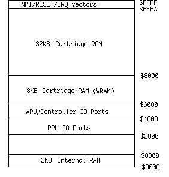
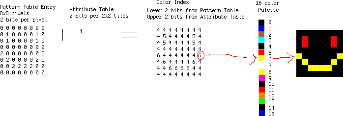

2. NES Architecture Overview¶
This Week
general overview of the NES architecture with the major components covered. All general purpose computers are arranged the same way with a place to store code (ROM), a place to store variables (RAM), and a processor to run code (CPU). The NES also adds another processor to generate the graphics (PPU) and a section of the CPU to generate audio (APU). Everything here is very general and will have more details than you want in the next few weeks.
- KB
- Memory size is listed in KiloBytes or KB. 1KB = 1024 bytes. Everything is powers of 2, so 2^10 = 1024 is used instead of 1000. If the capitalization is different, the meaning can change. Kb is Kilobits. Divide Kb by 8 to get KB, because 1 byte = 8 bits.
- ROM
- Read Only Memory, holds data that cannot be changed. This is where the game code or graphics is stored on the cart.
- RAM
- Random Access Memory, holds data that can be read and written. When power is removed, the chip is erased. A battery can be used to keep power and data valid.
- PRG
- Program memory, the code for the game
- CHR
- Character memory, the data for graphics
- CPU
- Central Processing Unit, the main processor chip
- PPU
- Picture Processing Unit, the graphics chip
- APU
- Audio Processing Unit, the sound chip inside the CPU*
2.1. System Overview¶
The NES includes a custom 6502 based CPU with the APU and controller handling inside one chip, and a PPU that displays graphics in another chip. Your code instructions run on the CPU and sends out commands to the APU and PPU. The NOAC (NES On A Chip) clones like the Yobo and NEX put all of these parts onto one chip.


There is only 2KB of RAM connected to the CPU for storing variables, and 2KB of RAM connected to the PPU for holding two TV screens of background graphics. Some carts add extra CPU RAM, called Work RAM or WRAM. If a cart needs to store saved games, this WRAM will have a battery attached to make sure it isn’t erased. A few carts add extra PPU RAM to hold four screens of background graphics at once. This is not common. The rest of this tutorial will not use WRAM or four screen RAM.
Each cart includes at least three chips. One holds the program code (PRG), another holds the character graphics (CHR), and the last is the lockout. The graphics chip can be RAM instead of ROM, which means the game code would copy graphics from the PRG ROM chip to the CHR RAM. PRG is always a ROM chip.
2.1.1. Lockout Chip¶
Inside the NES and the cart are also two lockout chips. The lockout chip controls resetting the console. First the NES lockout sends out a stream ID, 0-15. The cart lockout records this number. Then both lockout chips run a complex equation using that number and send the results to each other. Both chips know what the other is supposed to send so they both know when something is wrong. If that happens the system enters the continuous reseting loop. This is the screen flashing you see with a dirty cart.
When you cut pin 4 of the NES lockout chip, you are making it think it is inside the cart. It sits there waiting for the ID from the NES which never happens, so the system is never reset. If you were to completely remove the NES lockout chip the system would not work because it controls the reset button.
Most lockout defeaters used by the unlicensed game companies used large voltage spikes sent from the cart to the NES lockout. When timed right those would crash the NES lockout, preventing it from resetting the system. Nintendo slowly added protection against those on the NES board. Next time you open your NES, check the board for the revision number. Right in the middle it will say NES-CPU- then a number. That number is the revision. If you have 05 it is an early one. 07 and 09 added some lockout protection. 11 was the last version with the most lockout protection. Almost all unlicensed carts that use lockout defeaters will not work on a NES-CPU-11 system.
2.1.2. CPU Overview¶
The NES CPU is a modified 6502, an 8 bit data processor similar to the Apple 2, Atari 2600, C64, and many other systems. By the time the Famicom was created it was underpowered for a computer but great for a game system.
The CPU has a 16 bit address bus which can access up to 64KB of memory. 2^16 = 65536, or 64KB. Included in that memory space is the 2KB of CPU RAM, ports to access PPU/APU/controllers, WRAM (if on the cart), and 32KB for PRG ROM. The 16 bit addresses are written in hex, so they become 4 digits starting with a $ symbol. For example the internal RAM is at $0000-0800. $0800 = 2048 or 2KB. 32KB quickly became too small for games, which is why memory mappers were used. Those mappers can swap in different banks of PRG code or CHR graphics. Mappers like the MMC3 allowed up to 512KB of PRG, and 256KB of CHR. There is no limit to the memory size if you create a new mapper chip, but 128KB PRG and 64KB CHR was the most common size.

2.1.3. PPU Overview¶
The NES PPU is a custom chip that does all the graphics display. It includes internal RAM for sprites and the color palette. There is RAM on the NES board that holds the background, and all actual graphics are fetched from the cart CHR memory.
Your program does not run on the PPU, the PPU always goes through the same display order. You only set some options like colors and scrolling. The PPU processes one TV scanline at a time. First the sprites are fetched from the cart CHR memory. If there are more than 8 sprites on the scanline the rest are ignored. This is why some games like Super Dodge Ball will blink when there is lots happening on screen. After the sprites the background is fetched from CHR memory. When all the scanlines are done there is a period when no graphics are sent out. This is called VBlank and is the only time graphics updates can be done. PAL has a longer VBlank time (when the TV cathode ray gun is going back to the top of the screen) which allows more time for graphics updates. Some PAL games and demos do not run on NTSC systems because of this difference in VBlank time. Both the NTSC and PAL systems have a resolution of 256x240 pixels, but the top and bottom 8 rows are typically cut off by the NTSC TV resulting in 256x224. TV variations will cut off an additional 0-8 rows, so you should allow for a border before drawing important information.
NTSC runs at 60Hz and PAL runs at 50Hz. Running an NTSC game on a PAL system will be slower because of this timing difference. Sounds will also be slower.

2.2. Graphics System Overview¶
2.2.1. Tiles¶
All graphics are made up of 8x8 pixel tiles. Large characters like Mario are made from multiple 8x8 tiles. All the backgrounds are also made from these tiles. The tile system means less memory is needed (was expensive at the time) but also means that things like bitmap pictures and 3d graphics aren’t really possible. To see all the tiles in a game, download Tile Molester and open up your .NES file. Scroll down until you see graphics that don’t look like static. You can see that small tiles are arranged by the game to make large images.
2.2.2. Sprites¶
The PPU has enough memory for 64 sprites, or things that move around on screen like Mario. Only 8 sprites per scanline are allowed, any more than that will be ignored. This is where the flickering comes from in some games when there are too many objects on screen.
2.2.3. Background¶
This is the landscape graphics, which scrolls all at once. The sprites can either be displayed in front or behind the background. The screen is big enough for 32x30 background tiles, and there is enough internal RAM to hold 2 screens. When games scroll the background graphics are updated off screen before they are scrolled on screen.
2.2.4. Pattern Tables¶
These are where the actual tile data is stored. It is either ROM or RAM on the cart. Each pattern table holds 256 tiles. One table is used for backgrounds, and the other for sprites. All graphics currently on screen must be in these tables.
2.2.5. Attribute Tables¶
These tables set the color information in 2x2 tile sections. This means that a 16x16 pixel area can only have 4 different colors selected from the palette.
2.2.6. Palettes¶
These two areas hold the color information, one for the background and one for sprites. Each palette has 16 colors.
To display a tile on screen, the pixel color index is taken from the Pattern Table and the Attribute Table. That index is then looked up in the Palette to get the actual color.

To see all the graphics, download the FCEUXD SP emulator. Open up your .NES game and choose PPU Viewer from the Tools menu. This will show you all the active background tiles, all the active sprite tiles, and the color palettes. Then choose Name Table Viewer from the Tools menu. This will show you the backgrounds as they will appear on screen. If you choose a game that scrolls like SMB you can see the off screen background sections being updated.